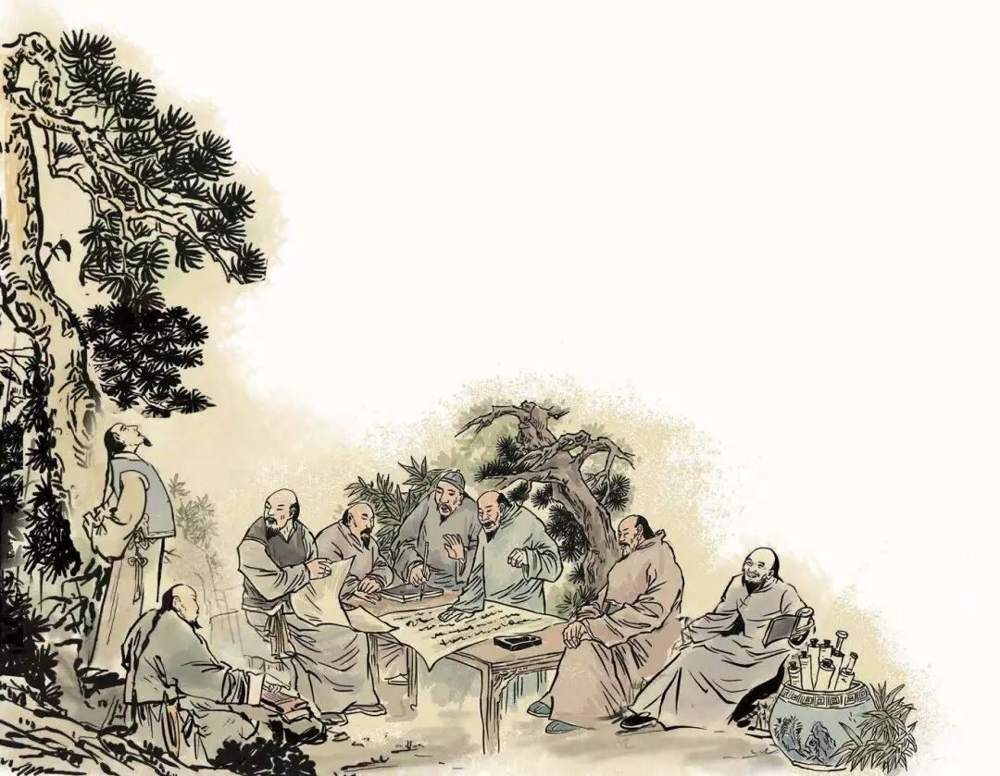
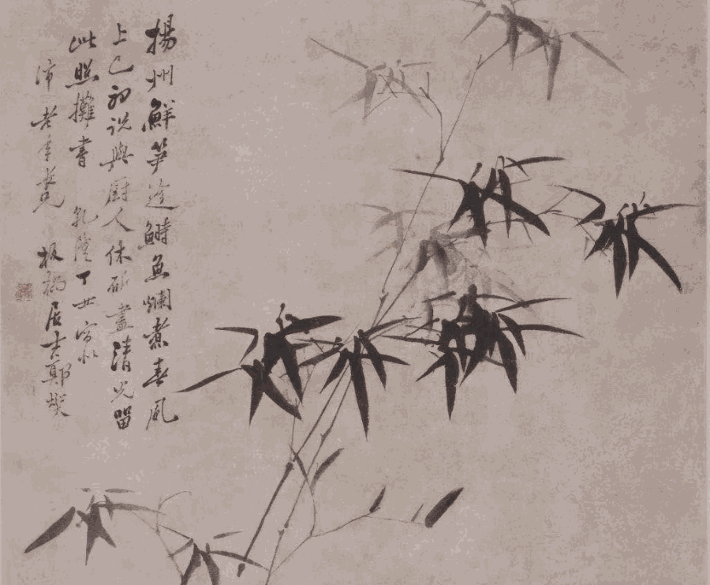
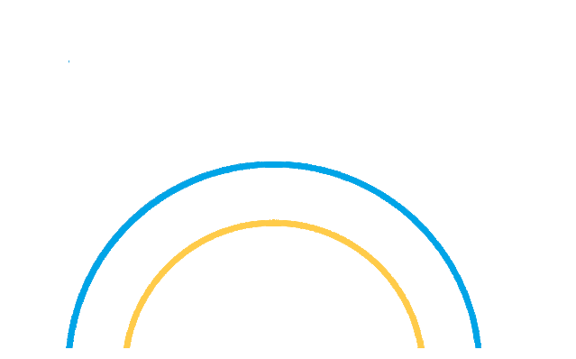
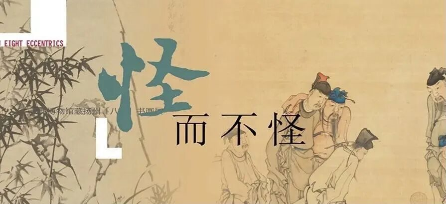

【行者无疆 寓绻淮扬】 谈笑有鸿儒，侃侃论八怪

谈笑有鸿儒，侃侃论八怪

“南挹长江万里之势，北擢天山千古之资；川原旷扩东衍，丘峦总束西隆”一首气势磅礴的扬州赋不仅栩栩如生地描绘了扬州的地貌景致，作者的才华横溢更是溢于文辞。行者无疆实践团有幸得到和这位作者——扬州八怪纪念馆的倪越主任进行线上交流的机会。

才高八斗，是会议中倪主任给我们留下的第一印象。从扬州八怪的精神内涵和艺术魅力，谈到淮扬文化的历史发展和现代结合，侃侃而谈的背后是倪主任的学富五车，他高瞻远瞩的眼界和见识看透了更深层次的东西，扬州文化里所蕴含的人文精神。

有趣的是，在倪主任娓娓而谈之时，我们听到倪主任家中打鸡蛋的声音，但他仍然口若悬河地讲述着他的扬州文化，他的事业与热爱，这哪是饭食能与之相比的?倪主任两眼里藏不住光芒似的，眨眼间又是一个钟头。
除了扬州文化外，交流中涉及了许多领域，倪主任都能谈论些许。这位知识渊博的老师没有刻板条框，不近人情的感觉，谈到当下热门问题时，反倒提出很多新鲜的观念和角度。到了提问环节，面对成员们嗷嗷待哺的模样，倪主任耐心地一一解答，用通俗易懂的语言为我们普及了各种各样的知识。
成员们怀着敬仰之心细心聆听倪主任滔滔不绝的文化灌输，真切地感受到倪主任对扬州文化的一片赤诚，被深深感动到的同时，更是增添了几分仰慕。此次之行，收货颇丰。